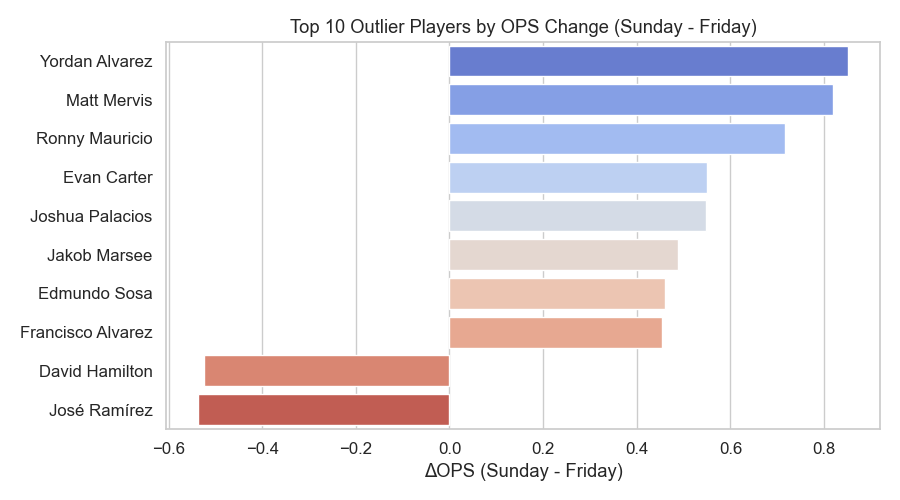
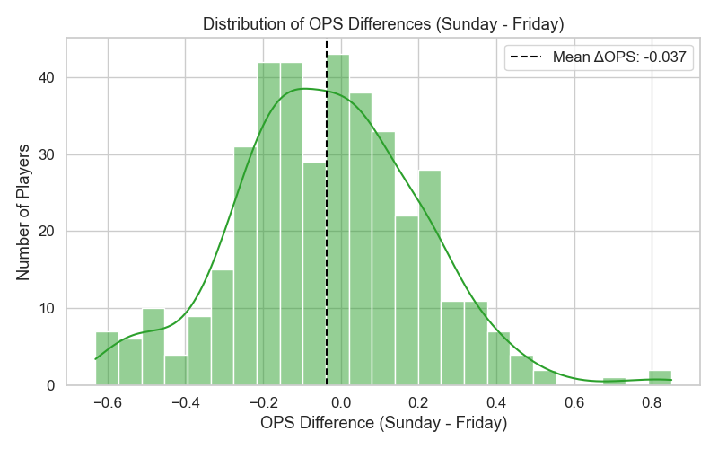

Friday vs Sunday Hitting Analysis
Analyzing OPS trends and player performance differences between Friday and Sunday MLB games.
OPS Distribution Across Days

Top 10 Outlier Players by OPS

Mean Statistic Comparison

Distribution of OPS Differences

← Back to Portfolio